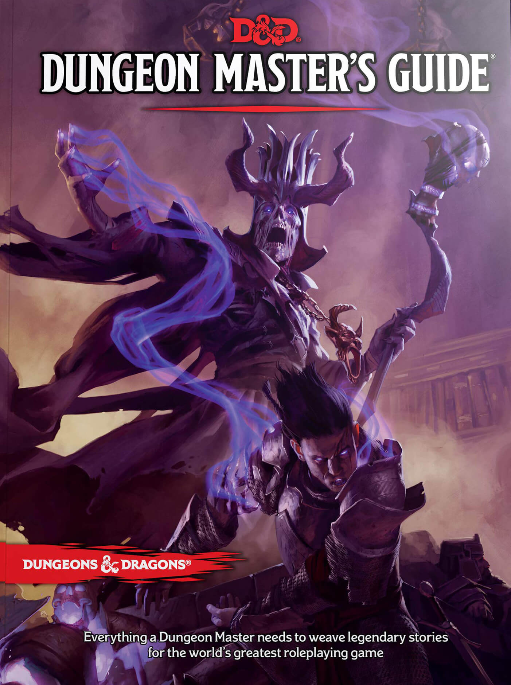
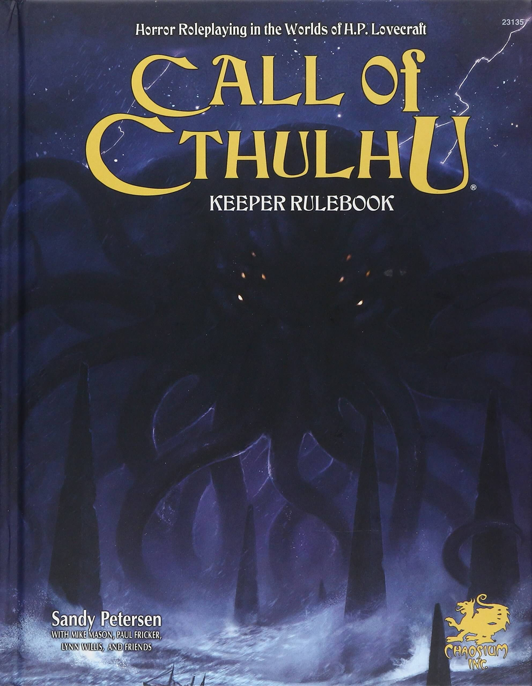
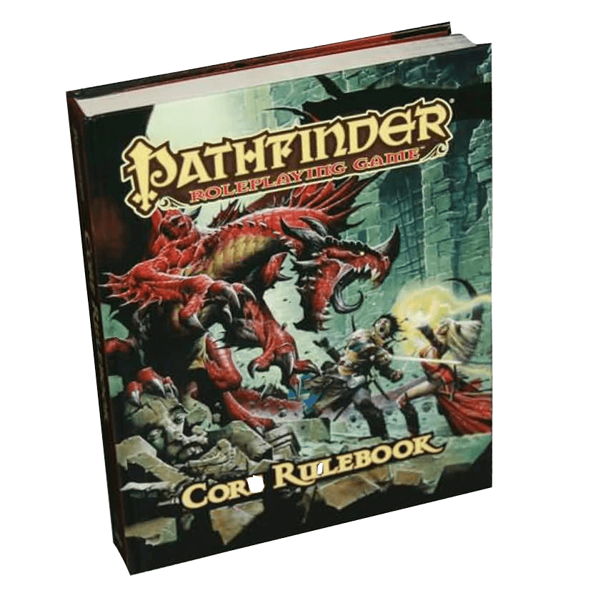
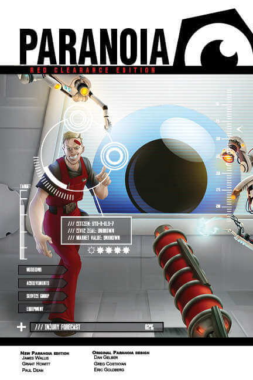

HTKYP
So You Want to be a GM
Tips for Beginners
By: Andrew Johnson
1. Rule 0, aka "The GM is always right." - You might hear this "rule" in many places, and at first glance it might seem heavy handed and destructive. Let's be clear, your job as GM is not to be an opponent for your players.
Your job is to be part of telling a cooperative story, and take care of all the NPCs, monsters, traps, and plot points the players will encounter. In this case, what Rule 0 (aka The GM is Always Right) means is that you
don't need to worry about the rules, or the text of an adventure, verbatim. If, during a session, something comes up in game and you're not sure what rule applies, or how a rule might apply, you can either stop the game
and look up the rule (and debate it with the players), or you can make a ruling on the spot for the sake of keeping the game flowing. I vote for the second option. Make it clear to the players that you are making a ruling
now, and will check the rule later, just keep the game going! After the session you can look up the rule and parse it out. If you got it wrong, no big deal. Next session you can tell the players what you learned and let
them know that going forward if the same situation comes up you will all follow the rule as you've learned it to be. The same can be said for adventures. If you're playing through a published adventure and make a mistake,
no big deal! You can retcon it later, or just change the story to fit the mistake. The Adventure as written is not the law! You can make it your own. Rule 0.
Read More . . .
What System Do I Choose?
-

Basic Guide
Dungeons & Dragons
The first Dungeons & Dragons game was played back when Gary Gygax and Dave Arneson chose to personalize the massive battles of their fantasy wargames with the exploits of individual heroes. This inspiration became the first fantasy roleplaying game, in which players are characters in an ongoing fantasy story. This new kind of game has become immensely popular over the years, and D&D has grown to include many new ways to vividly experience worlds of heroic fantasy.
-

Basic Guide
Call of Cthulhu
The game’s plots are designed to challenge the investigators. Each adventure is different, but your investigator is always at risk of becoming injured, suffering sanity-shattering experiences, or even be eaten by a monster! As the game progresses, investigators can gain secret knowledge from arcane books about the monsters and dark forces of the Cthulhu Mythos, as well as advancement in their skills as they become more experienced.
-

Basic Guide
Pathfinder
Informally nicknamed D&D version 3.75, Pathfinder is a modification of version 3.5 of Dungeons & Dragons, and is intended to be compatible with the older game. Lead Designer Jason Bulhman felt that the basic classes of D&D version 3.5 were lackluster, as they did not provide incentive to stay with a single class for 20 levels of play. Pathfinder adds many options to the classes and boosts their abilities in their core roles.
-

Basic Guide
Paranoia
The game is set in a dystopian future city which is controlled by an artificial intelligence construct called The Computer (also known as 'Friend Computer'), and where information (including the game rules) are restricted by color-coded security clearance. Players are initially enforcers of The Computer's authority (known as 'Troubleshooters', mainly for the fact that they shoot trouble), and will be given missions to seek out and eliminate threats to The Computer's control.
Creatures Most Foul and Deadly
-
The Tarrasque
The Tarrasque is a monster among monsters. As the creature with the highest CR in the Dungeons and Dragons Monster Manual, this creature is one that only the most well equipped and powerful parties can even attempt to take on. Even then, the resistances and immunities the Tarrasque has, along with its gargantuan health pool and sizeable damage per round, this creature will take down a few players before it is taken down itself.
-
Yig
Heralding from the Lovecraftian Mythos, Yig is a Great Old One that can be summoned in Call of Cthulhu. Like most creatures in Call, this one can very easily kill a party of prepared adventurers. Unlike many others however, Yig can rapidly invade the mind of investigators, dropping their sanity and causing them to turn on each other in a display of madness and mayhem.
-
Gravity Elemental
Found in Pathfinder, Gravity Elemental’s are destructive swaths of energy that exude a pressure that can instantly kill anyone, pulling them apart in a localized gravity well of its own creation. Players attempting to take one on require luck over any stategy if they wish to survive.
-
Friend Computer
The leader of the compound in which Paranoia players find themselves, Friend Computer is not an entity to trifle with. Having a complete control and oversight of the dystopian facility, players need only make one wrong move to quickly find they are in need of a new character sheet.
“The Negative Plane is a place of darkness and death, anathema to all living things. Yet there are those who would tap into its fell power to use its energy for sinister ends. Most often, when such individuals approach the midnight realm, they find they are unequal to the task. Those not destroyed outright are sometimes drawn inside the plane and replaced by Nightwalkers, terrifying undead creatures that devour all life they encounter.”
Heralding from Dungeons and Dragons 5th Edition, Nightwalkers are terrifying creatures that seek to destroy all life they come across. While the conditions for summoning a Nightwalker are difficult to meet, doing so can quite easily spell doom for unprepared parties of low to mid levels.
The Nightwalker stat block can be found within “Mordenkainen’s Tome of Foes.”
Weekly Homebrew
Void Hound
By: Andrew Johnson
Large Aberration (Neutral)
AC: 17 (Natural Armor)
HP: 87
Speed: 40 Ft
Str 18; Dex 20; Con 18; Int 14; Wis 16; Cha 14
Saving Throws: Con +6, Wis +6
Skills: Acrobatics +9, Perception +6
Damage Resistances: Necrotic
Damage Immunities: Cold, Psychic, Poison
Condition Immunities: Poisoned, Exhausted
Senses: Darkvision 120 Ft, Truesight 20 Ft, Passive Perception 16
Languages: Void
CR: 7
Keen Smell: The Void Hound has advantage on Perception checks that rely on smell.
Magic Resistance: The Void Hound has advantage on Saving Throws against spells and other magical effects.
Slippery: The Void Hound has advantage on Saving Throws and Ability Checks to escape a grapple.
Actions
Multiattack: The Void Hound can make two Claw attacks and one Bite attack.
Bite: Melee Weapon Attack: +7 to hit, reach 5 Ft, one target. Hit: 14 (3d6 + 4) piercing damage.
Claw: Melee Weapon Attack: +7 to hit, reach 5 Ft, one target. Hit: 11 (2d6 + 4) slashing damage.
Mark of the Void: The Void Hound chooses one target as their prey, marking them for as long as the Void Hound lives. As long as the target lives, the Void Hound always knows their location, has advantage on the first attack against that target each turn, and can teleport to them as a bonus action.